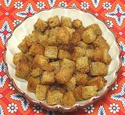

|
Polish CroutonsPoland - Grzanki | ||||
| Makes: Effort: Sched: DoAhead: |
any * 15 min Yes |
Croutons, simply fried with butter, are a popular garnish, for salads, sauced meats, etc. Note that some recipes reverse the procedure, toasting the bread cubes first, then frying in butter. | |||
|
ar ar |
|
Bread 2-day (1) Butter |
Make - (15 min - 5 min work)
|